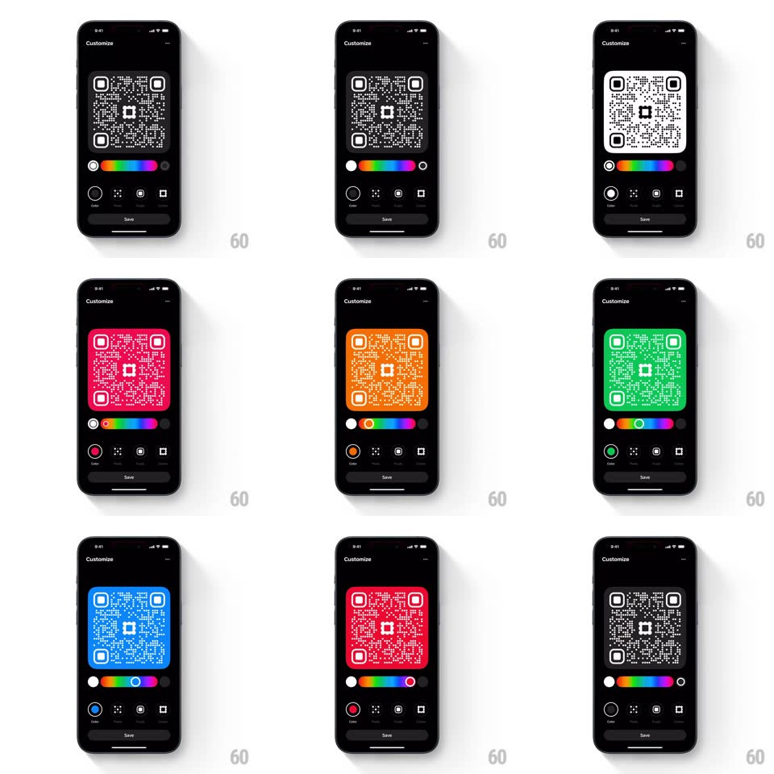

Media
Frame-by-frame

Rebuild this interaction 1:1: Family's QR color slider - in the QR "Customize" screen, dragging along the rainbow hue slider retints the QR code's background in real time (white -> red -> orange -> teal -> purple...), with the slider thumb and the selected-color swatch tracking the drag.

Rebuild this interaction 1:1: Family's QR color slider - in the QR "Customize" screen, dragging along the rainbow hue slider retints the QR code's background in real time (white -> red -> orange -> teal -> purple...), with the slider thumb and the selected-color swatch tracking the drag. ## Integration Integration: stack-agnostic spec - springs given as stiffness/damping, timed motions as duration + curve; map every value to your framework and animation library of choice. ## Scene Black "Customize" screen: large QR code preview, a horizontal rainbow hue slider with circular end swatches, a row of customization tabs (Color / Pixels / Logo / Frame), and a Save button. ## Motion spec Pattern: real-time slider-driven recolor. - Drag: the thumb follows the finger 1:1 along the hue track; the QR background updates every frame to the hue under the thumb (no throttle, no tween - direct mapping); QR modules stay dark/contrasting against the new background. - The left end-swatch (selected color) updates live to match; the Color tab icon fills with the current hue (200ms lag at most). - Release: the thumb settles with a tiny spring (spring ~480/30, 150ms) - no snapping, the hue stays exactly where dropped. - The QR code scales subtly down (0.97) while dragging and springs back on release (spring ~400/24, 250ms), giving the drag a tactile press feel. ## Calibration - The recolor is per-frame and 1:1 - any visible lag between thumb and background breaks the illusion. - Contrast is preserved: module color inverts or darkens as needed so the code stays scannable. ## Reduced motion No scale-press effect; recolor still updates live (it is functional, not decorative). ## Don't miss - The end swatches are the selected color and a fixed counterpart - the moving thumb does not replace them. - The hue track is a continuous rainbow, not discrete color chips.